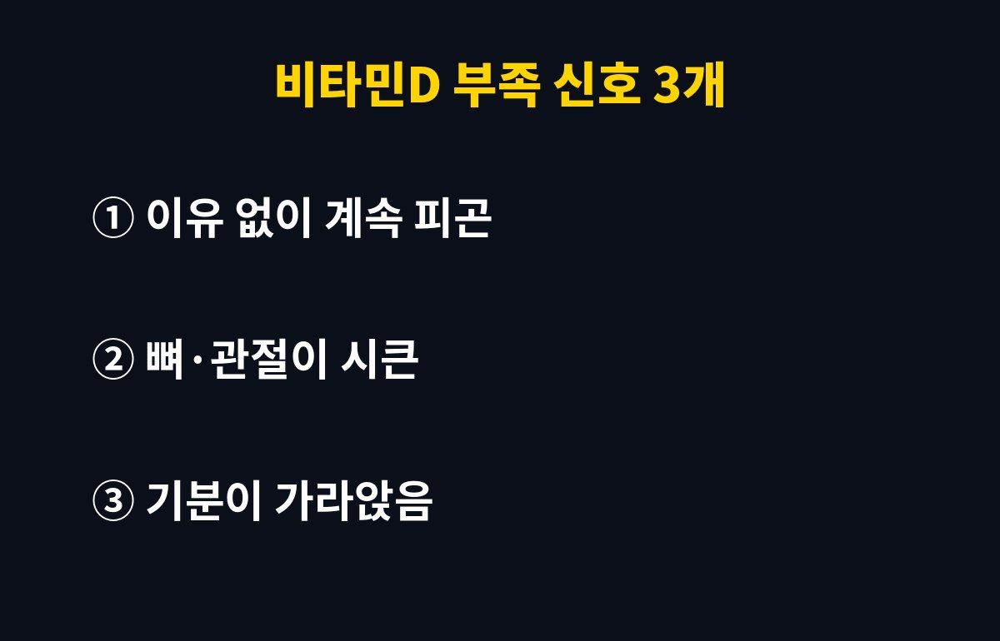
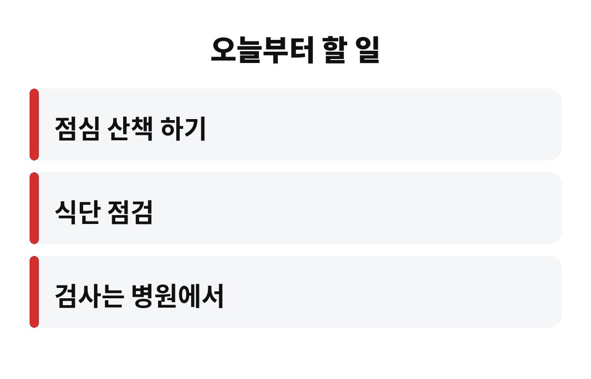

비타민D 부족 신호는 크게 3개, 이유 없는 피곤함·뼈와 관절의 시큰거림·가라앉는 기분으로 알려져 있어요. 잠을 충분히 자도 개운하지 않은 직장인이라면 이 3가지 중 몇 개나 해당되는지 한번 세어 보세요.
11월이 되면 해는 짧아지고 패딩은 두꺼워지죠. 그래서 나도 모르게 비타민D가 바닥나는 시기이기도 합니다. 왜 그런지, 무엇부터 점검하면 좋을지 편하게 풀어볼게요.
비타민D는 음식으로 먹는 양보다 햇볕을 쬐면 우리 피부에서 만들어지는 양이 훨씬 크다고 알려져 있어요. 그래서 '햇빛 비타민'이라는 별명이 붙었죠. 문제는 겨울입니다. 해가 뜨기 전에 출근하고, 해가 진 뒤에 퇴근하면 하루 종일 햇볕을 거의 못 보는 날이 이어지거든요.
게다가 날이 추워지면 두꺼운 옷으로 몸을 가리고, 점심시간에도 사무실에서 배달 음식을 먹는 분이 많아요. 실내에서 창문 너머로 보는 햇빛은 도움이 되기 어렵다고 해요. 그러니 '나는 건강한데 왜 이러지?' 싶은 분들도 비타민D 부족 가능성에서 자유롭지 않습니다.
| 핵심 1 | 비타민D는 햇볕으로 몸에서 만들어지는 비중이 크다 |
| 핵심 2 | 겨울엔 일조 시간이 줄어 부족해지기 쉽다 |
| 핵심 3 | 정확한 수치는 혈액 검사로만 알 수 있다 |

이유 없이 계속 피곤해요. 충분히 자도 아침이 힘들고 오후만 되면 축 처진다면 한 번쯤 의심해 볼 수 있어요. 물론 피곤함의 원인은 수면 부족, 스트레스, 빈혈 등 정말 다양하니까 이것만으로 단정하면 안 됩니다.
뼈나 관절이 시큰거려요. 비타민D는 칼슘이 뼈에 잘 쌓이도록 돕는 역할을 해요. 그래서 오래 부족하면 뼈가 약해지는 쪽으로 이어질 수 있다고 알려져 있죠. 요즘 허리나 무릎이 괜히 뻐근하다면 기억해 두세요.
기분이 가라앉아요. 겨울에 우울한 기분이 드는 분들이 많은데, 일조량 감소와 비타민D 부족이 관련 있을 수 있다는 이야기가 꾸준히 나옵니다. 다만 기분 문제가 오래간다면 영양제보다 전문가 상담이 먼저예요.
가장 쉬운 건 점심시간 산책이에요. 밥 먹고 잠깐이라도 밖에 나가 햇볕을 쬐어 보세요. 팔이나 얼굴이 햇볕을 받는 게 좋고, 선글라스와 두꺼운 옷으로 다 가리면 효과가 줄어들 수 있어요. 매일 거창한 운동이 아니라 '밖에 나갔다 오기'만 해도 충분히 시작입니다.
식단도 한 번 돌아보세요. 생선류, 달걀노른자, 버섯류에 비타민D가 들어 있다고 알려져 있어요. 다만 음식만으로 채우기는 쉽지 않아서, 부족이 걱정되면 영양제를 막 사 먹기보다 병원에서 혈액 검사를 먼저 받아보는 쪽이 안전합니다.
이게 반전이에요. 비타민D는 지용성이라 몸에 쌓일 수 있어서, 많이 먹는다고 늘 좋은 건 아니에요. 오히려 과하게 먹으면 몸에 부담이 될 수 있다고 알려져 있습니다. 그래서 '남들이 먹으니까 나도'가 아니라, 내 상태를 확인하고 의사나 약사와 상의해서 정하는 게 정답이에요.
또 하나, 실내 생활이 길고 외출이 적은 분, 야간 근무가 잦은 분, 나이가 들면서 활동량이 줄어든 부모님 세대는 특히 신경 써야 해요. 이런 분들은 자신도 모르는 사이에 부족한 상태가 오래 이어질 수 있거든요. 가족 중에 겨울마다 기운 없다고 하시는 분이 있다면, 오늘 저녁에 한 번 같이 산책을 나가 보는 건 어떨까요? 작은 습관 하나가 겨울 컨디션을 꽤 다르게 만들어 줄 수 있습니다.
그리고 검사 결과가 정상이라면 괜히 영양제를 더할 필요는 없어요. 부족하다는 말을 들었을 때만 의사와 함께 방법을 정하면 됩니다. 불안해서 일단 사 먹기보다, 내 몸 상태를 먼저 아는 것이 가장 똑똑한 순서예요.

피곤함·시큰거림·가라앉는 기분이 겹친다면 11월에는 햇볕부터 챙기고 필요하면 검사를 받아보세요. 여러분은 이번 주에 햇볕을 몇 번이나 쬐셨나요? 댓글로 알려주시고, 도움이 됐다면 구독해 주세요!
영양제를 먹기 시작했다면 복용 시작일과 하루 양을 메모해 두면 다음 진료 때 설명하기 쉽다. 이미 먹고 있는 종합비타민에 비타민D가 들어 있는지도 성분표에서 함께 확인해 겹치지 않게 한다.
※ 이 글은 일반적인 건강 정보이며 진단·치료를 대신하지 않습니다. 증상이 지속되면 반드시 전문의 상담을 받으세요.